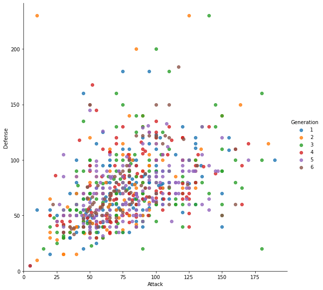

Seaborn
Introducción

Matplotlib ha demostrado ser una herramienta de visualización increíblemente útil y popular, pero incluso los usuarios entusiastas admitirán que a menudo deja mucho que desear. Hay varias quejas válidas sobre Matplotlib que a menudo surgen:
-
Antes de la versión 2.0, los valores predeterminados de Matplotlib no son exactamente las mejores opciones. Se basó en MATLAB alrededor de 1999, y esto a menudo se nota.
-
La API de Matplotlib es de nivel relativamente bajo. Es posible realizar una visualización estadística sofisticada, pero a menudo requiere mucho código repetitivo. Matplotlib fue anterior a Pandas en más de una década y, por lo tanto, no está diseñado para su uso con Pandas DataFrames. Para visualizar datos de un Pandas DataFrame, debe extraer cada Serie y, a menudo, concatenarlas juntas en el formato correcto. Sería mejor tener una biblioteca de trazado que pueda usar inteligentemente las etiquetas de DataFrame en un trazado.
Una respuesta a estos problemas es Seaborn. Seaborn proporciona una API sobre Matplotlib que ofrece opciones sensatas para el estilo de trazado y los valores predeterminados de color, define funciones simples de alto nivel para tipos de trazado estadísticos comunes, y se integra con la funcionalidad proporcionada por Pandas DataFrames.
Gráfico a Gráfico
Para mostrar el funcionamiento de seaborn, se ocupa el conjunto de datos: pokemon.csv. Para el caso de seaborn se los gráficos serán generados directamente desde el dataframe.

# librerias
import os
import numpy as np
import pandas as pd
import matplotlib.pyplot as plt
import seaborn as sns
pd.set_option('display.max_columns', 500) # Ver más columnas de los dataframes
# Ver gráficos de matplotlib en jupyter notebook/lab
%matplotlib inline
# cargar datos
pokemon_data = pd.read_csv(os.path.join("data","pokemon.csv"), sep=",")
pokemon_data.head()
| # | Name | Type 1 | Type 2 | HP | Attack | Defense | Sp. Atk | Sp. Def | Speed | Generation | Legendary | |
|---|---|---|---|---|---|---|---|---|---|---|---|---|
| 0 | 1 | Bulbasaur | Grass | Poison | 45 | 49 | 49 | 65 | 65 | 45 | 1 | False |
| 1 | 2 | Ivysaur | Grass | Poison | 60 | 62 | 63 | 80 | 80 | 60 | 1 | False |
| 2 | 3 | Venusaur | Grass | Poison | 80 | 82 | 83 | 100 | 100 | 80 | 1 | False |
| 3 | 4 | Mega Venusaur | Grass | Poison | 80 | 100 | 123 | 122 | 120 | 80 | 1 | False |
| 4 | 5 | Charmander | Fire | NaN | 39 | 52 | 43 | 60 | 50 | 65 | 1 | False |
Gráfico de línea y puntos
Realizar un gráfico de línea y otro de puntos para analizar el ataque vs defensa de todos los pokemones separados por generación.
# grafico de linea
plt.figure(figsize=(10, 6))
palette = sns.color_palette("hls", 6)
sns.lineplot(
x='Attack',
y='Defense',
hue='Generation',# color por Generation
data=pokemon_data,
ci = None,
palette=palette
)
plt.show()

# grafico de puntos
plt.figure(figsize=(10, 6))
sns.scatterplot(
x='Attack',
y='Defense',
hue='Generation',# color por Generation
data=pokemon_data,
palette=palette
)
plt.show()
Boxplot
Realizar un gráfico box plot sobre los stats de los pokemones.
# Pre-format DataFrame
stats_df = pokemon_data.drop(['#', 'Generation', 'Legendary'], axis=1)
# New boxplot using stats_df
plt.figure(figsize=(10, 6))
sns.boxplot(data=stats_df)
plt.show()
Mapas de calor
Realizar un mapa de calor sobre los stats de los pokemones.
# Calculate correlations
corr = stats_df.corr()
# Heatmap
plt.figure(figsize=(10, 6))
sns.heatmap(corr)
plt.show()
Histogramas
Realizar un histograma del stat attack.
# Distribution Plot (a.k.a. Histogram)
plt.figure(figsize=(10, 6))
sns.histplot(pokemon_data.Attack)
plt.show()
Barplot
Realizar un bar plot sobre la cantidad de pokemones que hay por generación
# realizar conteo de manera manual
df_generation = pokemon_data.groupby('Generation').apply(lambda x: len(x)).reset_index()
df_generation.columns = ['Generation','Count']
df_generation.head()
| Generation | Count | |
|---|---|---|
| 0 | 1 | 166 |
| 1 | 2 | 106 |
| 2 | 3 | 160 |
| 3 | 4 | 121 |
| 4 | 5 | 165 |
# plot seaborn: barplot
plt.figure(figsize=(10, 6))
sns.barplot(
x='Generation',
y='Count',
data=df_generation
)
plt.show()
countplot
Realizar un conteo sobre los distintos tipos Type 1 de pokemones.
# Count Plot (a.k.a. Bar Plot)
plt.figure(figsize=(10, 6))
pkmn_type_colors = ['#78C850', # Grass
'#F08030', # Fire
'#6890F0', # Water
'#A8B820', # Bug
'#A8A878', # Normal
'#A040A0', # Poison
'#F8D030', # Electric
'#E0C068', # Ground
'#EE99AC', # Fairy
'#C03028', # Fighting
'#F85888', # Psychic
'#B8A038', # Rock
'#705898', # Ghost
'#98D8D8', # Ice
'#7038F8', # Dragon
]
sns.countplot(x='Type 1',
data=pokemon_data,
palette=pkmn_type_colors)
# Rotate x-labels
plt.xticks(rotation=-45)
plt.show()
Factor plot
Realizar un catplot de los distintos tipos de pokemones para la generación Type 1, analizando si el pokemón es legendario o no.
# Factor Plot
plt.figure(figsize=(16, 12))
g = sns.catplot(x='Type 1',
y='Attack',
data=pokemon_data,
hue='Legendary', # Color by stage
col='Legendary', # Separate by stage
kind='swarm', # Swarmplot
s = 1.5,
palette = ['black','blue'])
# Rotate x-axis labels
g.set_xticklabels(rotation=-45)
# Doesn't work because only rotates last plot
# plt.xticks(rotation=-45)
plt.show()
<Figure size 1152x864 with 0 Axes>
Customizando con Matplotlib.
Seaborn es una interfaz de alto nivel para Matplotlib. Según nuestra experiencia, Seaborn lo llevará a la mayor parte del camino, pero a veces necesitará traer Matplotlib.
Establecer los límites de los ejes es uno de esos momentos, pero el proceso es bastante simple:
Primero, usar la función lmplotde Seaborn de manera normal. Luego, use las funciones de customización de Matplotlib. En este caso, usaremos sus funciones ylim () y xlim (). Aquí está nuestro nuevo diagrama de dispersión con límites de ejes sensibles:
# plot seaborn
plt.figure(figsize=(10, 6))
sns.lmplot(x='Attack',
y='Defense',
data=pokemon_data,
fit_reg=False,
height=8,
hue='Generation')
# usar Matplotlib
plt.ylim(0, None)
plt.xlim(0, None)
plt.show()
<Figure size 720x432 with 0 Axes>
